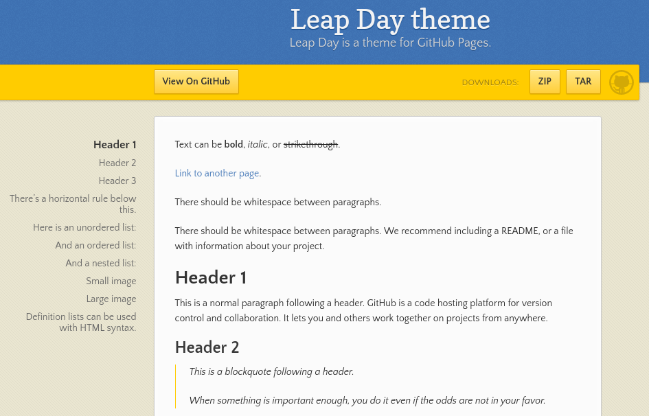

Tema Leap day
Jekyll viene de fábrica con el tema minima que puede ser muy útil en determinados sitios webs muy sencillos. Pero en ocasiones, puede ser insuficiente. Ha llegado el momento de presentar un segundo tema con una estética y diseño más llamativos y atractivos.
Al finalizar, sabrá:
-
Dónde previsualizar el tema Leap day.
-
Cómo configurar el tema.
-
Cómo personalizar el tema.
-
Qué archivo de diseño proporciona.
Introducción
Recordemos que un tema (theme) no es más que el estilo o la estética del sitio web. El tema Leap day (Leap day theme), desarrollado por GitHub, permite disponer de un panel lateral donde mostrar el índice de la página que se está mostrando. Puede previsualizarlo en https://pages-themes.github.io/leap-day:

Para su uso, debemos utilizar la siguiente propiedad remote_theme en el archivo _config.yaml:
remote_theme: pages-theme/leap-day
En el archivo Gemfile, tenemos que indicar la gema github-pages:
gem "github-pages", group :jekyll_plugins
La etiqueta de seguimiento de Google Analytics se indica en la propiedad google_analytics, recuerde que suele ser independiente al tema:
google_analytics: G-XXXXXXXXXX
Hojas de estilo
Al igual que con el tema minima, podemos sobrescribir aspectos de estilo mediante el archivo /assets/css/style.css del directorio del sitio, Siendo su primera línea lo siguiente:
---
---
@import "{{ site.theme }}";
Si se siente cómodo con SCSS, utilice el mismo directorio pero style.scss.
Archivos de diseño
A diferencia de minima que presenta varios archivos de diseño, Leap day solo proporciona uno, default. Puede consultarlo en la ruta _layouts/default.html del tema, disponible en https://github.com/pages-themes/leap-day.
Sobrescritura de plantillas del tema minima
Al igual que en minima, en ocasiones, puede ser muy útil personalizar ciertas plantillas de Leap day. Para ello, eche un vistazo al repositorio Git, más concretamente al directorio _includes. En él, encontrará:
| Plantilla | Descripción |
|---|---|
| head-custom.html | Contenido personalizado a añadir al <head>. |
| head-custom-google-analytics.html | Código del módulo de Google Analytics. |
Para sobrescribir una de ellas, no tiene más que crear la carpeta homónima y el archivo homónimo en el directorio del sitio. Puede copiar el contenido de la plantilla del repositorio y adaptarlo a sus necesidades.
Configuración del banner de GitHub
El tema Leap day proporciona un banner relacionado con GitHub y las descargas. Se encuentra debajo del título y la descripción de la página. Si consulta el archivo de diseño /_layouts/default.html, observará lo siguiente:
<div id="banner">
<span id="logo"></span>
<a href="{{ site.github.repository_url }}" class="button fork"><strong>View On GitHub</strong></a>
{% if site.show_downloads %}
<div class="downloads">
<span>Downloads:</span>
<ul>
<li><a href="{{ site.github.zip_url }}" class="button">ZIP</a></li>
<li><a href="{{ site.github.tar_url }}" class="button">TAR</a></li>
</ul>
</div>
{% endif %}
</div><!-- end banner -->
Si no desea este banner, puede añadir una regla CSS como la siguiente a su archivo de hoja de estilo:
#banner {
display: none;
}
Si lo que desea es personalizar los enlaces, utilice la propiedad github del archivo _config.yaml:
github:
repository_url: url-al-repo-de-git
zip_url: url-donde-se-encuentra-el-zip
tar_url: url-donde-se-encuentra-el-tar
A diferencia de minima que tiene una propiedad homónima en el archivo _config.yaml para su propia configuración, Leap day no tiene ninguna. Su configuración se añade como propiedades raíces al archivo de configuración. Recuerde que el contenido de este archivo se puede obtener en tiempo de generación del sitio web estático mediante una expresión Liquid como sigue:
{{ site.propiedad }}
Si sólo desea suprimir la parte de las descargas, añada lo siguiente al archivo _config.yaml:
show_downloads: false
Personalización del tema
Si se da cuenta, el tema minima es mucho más configurable y personalizable que Leap day. Lo que ocurre que Leap day tiene algunas cosas que pueden ser interesantes en algunos proyectos. Esta es la razón por la que lo hemos presentado. Además, nos permite observar que cada tema es un mundo y lo que se puede hacer en uno, no tiene por qué poder hacerse en otro.
Si necesita personalizar más profundamente Leap day porque le gusta su diseño, no se corte. Puede coger, por ejemplo, el archivo de diseño original y modificarlo a su antojo, añadiendo su nuevo diseño al directorio _layouts del directorio del sitio. Así, puede añadir redes sociales de manera similar a como lo hace minima.